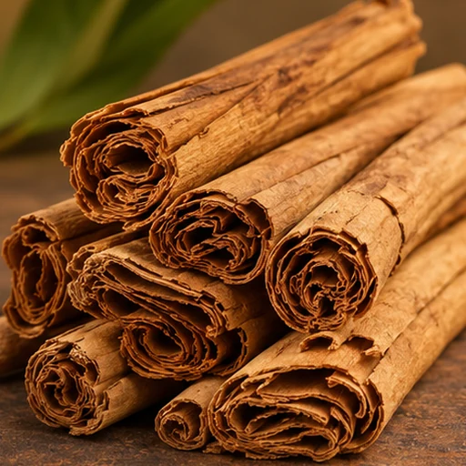

Ceylon spices
Ceylon cinnamon, whole spices and blends for importers and food brands. Compare forms and prepare a sourcing brief for your destination market.

Define your specification
For cinnamon, share your grade and cut or grind. For other spices and blends, specify whole or ground, mesh where applicable, and intended use. If your market requires contaminant or microbiological testing, include the test and any limits.
Include estimated order volume, destination and preferred timing. We confirm supplier capability and available documents against your brief.
Prepare a ceylon spices enquiryCompare spice formats before requesting a quote
Whole cinnamon
Tell us the quill grade, cut or length and pack size you need. If sampling, specify what your team will check on arrival.
Powders and blends
Share the grind or mesh, application, blend requirements and any microbiological or contaminant tests required by your buyer.